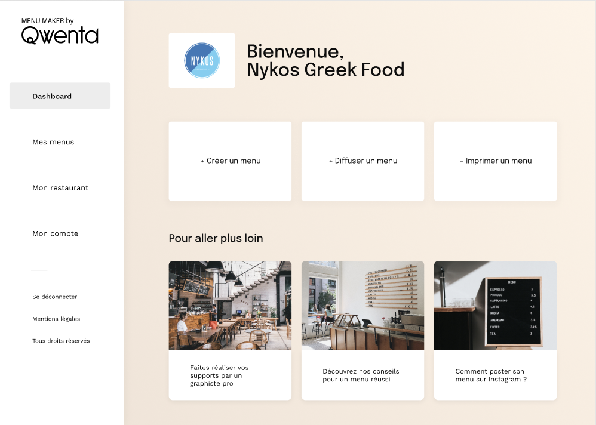
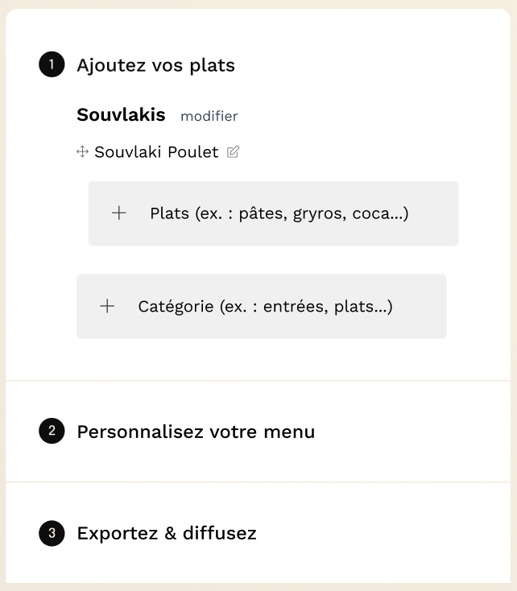
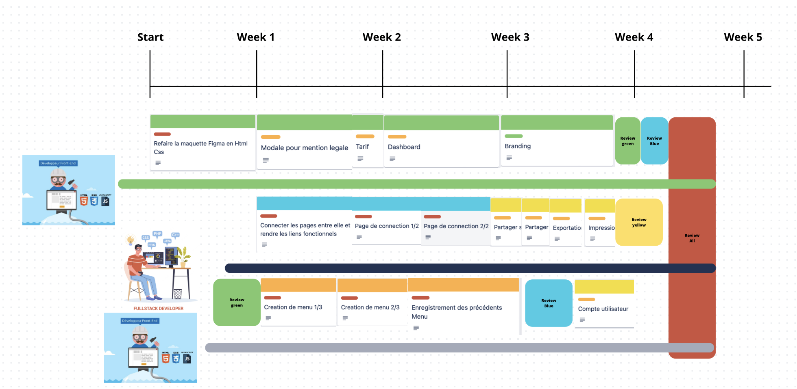

QWENTA
Pour ce projet il ne s’agit pas de développer un site mais de mener, préparer et planifier le projet de développement d’un site.
Rôle
Developpeur Front-End
Tâches
Collaboration - Préparer et planifier -Methodologie Agile - User Stories
Les spécifications techniques de ce site étaient les suivantes : créer un menu, personnaliser un menu et diffuser un menu.

Pour ce projet, j'ai dû m'imprégner des besoins du client pour le site, mettre en place une équipe pour la réalisation du site, attribuer des tâches à chaque développeur et créer un tableau Trello pour définir chaque tâche et le temps nécessaire à leur réalisation.
 Exemple tache
Exemple tache
 Exemple tache
Exemple tache

Ajout plat
 Choix style
Choix style
 Exp/Diffuser
Exp/Diffuser
Ce projet nécessitait une organisation et la création d'une équipe afin de mener à bien la création de ce site. Voici comment j'ai organisé le travail.

Contact